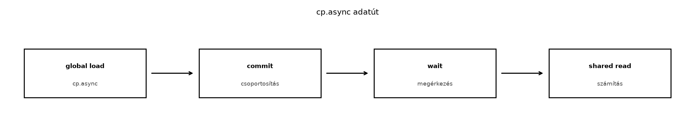

A globális memória és a shared memory közötti adatmozgás hagyományos útja a CUDA programozási modellben a regisztereken keresztül vezet. Amikor a 14.1 alfejezetben a tiling (csempézés) technikáját bemutattuk, a kernelünkben a betöltés tipikusan a következő lépésekből állt:
float) beolvasása
egy regiszterbe.__syncthreads() hívás a blokk számára.Ez a szinkron minta működik, de két jelentős hatékonysági problémát
vet fel. Egyrészt a betöltés végrehajtása közben a szál foglal egy
regisztert az adat számára, ami növeli a regiszternyomást és
csökkentheti az occupancy-t. Másrészt, és ami ennél fontosabb, a
betöltés és a tárolás közötti függőség miatt a hardver nem tudja igazán
elrejteni a globális memória latenciáját a shared memory-ba való írás
előtt. Az NVIDIA az Ampere architektúrával (Compute Capability 8.0 és
újabb) bevezetett egy hardveres megoldást erre a problémára: az
aszinkron másolást, röviden cp.async.
Ez a fejezet a cp.async alapvető működését, a hozzá
tartozó commit/wait szinkronizációs modellt, valamint a gyakorlati
alkalmazását mutatja be egy laborpéldán keresztül.

A cp.async utasítás (melyet a PTX ISA dokumentáció
cp.async.ca és cp.async.cg formában ismer, a
hardverben pedig LDGSTS utasításként valósul meg) lehetővé
teszi a szálak számára, hogy a globális memóriából közvetlenül a shared
memory-ba másoljanak adatot anélkül, hogy az adat átmenetileg a
regiszterfájlban tárolódna. Ezzel az adatút lerövidül: az adat a
globális memóriából a memóriarendszeren (L2 cache, illetve opcionálisan
L1) keresztül az SM-en belüli shared memory-ba kerül, kikerülve a
regiszterfájlt (a .cg változat az L1-et sem tölti fel); az
utasítás a load-store egységen és az L1TEX egységen keresztül fut.
A hardvertámogatás kulcsfontosságú itt. A cp.async nem
egy szoftveres trükk, hanem egy valódi aszinkron memóriaművelet. A PTX
ISA-ban két fő változata van:
cp.async.ca (Cache All): Az adatot az
L1 és L2 cache-en keresztül mozgatja. Ez akkor hasznos, ha a globális
memóriabeli adatot más szálak vagy blokkok is használják, és szeretnénk
kihasználni a cache-lokalitást.cp.async.cg (Cache Global): Az adat
csak az L2 cache-be kerül, az L1-et megkerüli. Ez 16 bájtos másolásnál
tipikus választás a tiling műveletekhez, ahol a globális memóriából
származó adatot a blokk csak egyszer olvassa be a shared memory-ba, és
az L1 cache-ben tartása felesleges szennyezést okozna, kiszorítva onnan
más, hasznos adatokat.A hardveres támogatásnak köszönhetően a cp.async
műveletek képesek a háttérben folytatódni, miközben a szálak más, nem
függő utasításokat hajtanak végre. Ez az alapja a következő alfejezetben
(14.3) tárgyalt double buffering és pipeline technikáknak, ahol a
számítás és a memóriamásolás átfedésbe kerül. Jelen alfejezetben azonban
az alapvető mechanizmusra és a helyes szinkronizációra
koncentrálunk.
__pipeline_memcpy_async, commit és waitA cp.async használatához a CUDA C++ nyelvben a
<cuda_pipeline.h> fejlécfájlban deklarált
pipeline primitíveket (__pipeline_memcpy_async,
__pipeline_commit, __pipeline_wait_prior)
használhatjuk. (A libcu++ <cuda/pipeline> fejléce a
magasabb szintű cuda::pipeline osztályt adja, amely más
API; a primitívekhez a <cuda_pipeline.h> kell.) A
primitívek közvetlenebb kontrollt adnak, és jól szemléltetik a hardveres
működést.
A legalapvetőbb belső függvény a következő:
__pipeline_memcpy_async(void* __restrict__ dst_shared,
const void* __restrict__ src_global,
size_t size_and_align);Itt dst_shared a shared memory célcím,
src_global a globális memória forráscím,
size_and_align pedig a másolandó bájtok száma, amely egyben
a cím igazítási követelménye is: értéke csak 4, 8 vagy 16 lehet, és a
forrás- és célcímnek ugyanekkora igazításúnak kell lennie. Az
.ca változat mindhárom méretet támogatja, a
.cg csak a 16 bájtosat; a 4 és 8 bájtos másolás tehát
.ca-ként valósul meg. A leggyakoribb esetekben
float (4 bájt), int2/float2 (8
bájt) vagy int4/float4 (16 bájt) típusokat
másolunk. A 16 bájtos vektorizált másolás a leghatékonyabb, mert ez
felel meg egy teljes 128 bites memóriatranzakciónak.
Fontos, hogy a __pipeline_memcpy_async hívása önmagában
nem garantálja az adat azonnali elérhetőségét a shared memory-ban. Az
aszinkron műveletek befejeződésének kezelésére szolgál a commit és a
wait mechanizmus.
A commit/wait modell:
A cp.async utasítások egy aszinkron „csoportokba”
(pipeline stage-ekbe) rendeződnek. A szálak a
__pipeline_commit() hívással lezárják az összes addig
kiadott, befejezetlen cp.async műveletet egy csoportba. Ezt
követően a __pipeline_wait_prior(N) hívással a szál
megvárja, amíg az általa commitált csoportok közül legfeljebb a
legutóbbi N van még folyamatban, azaz a legutóbbi
N kivételével minden korábbi csoport befejeződött.
N = 0: minden csoport kész; N = 1: a legutolsó
commitált csoport még futhat (ez a double buffering alapja, 14.3).
cp.async csoportok, a
__pipeline_wait_prior(N) és a blokkszintű szinkron
(sematikus, nem mért időzítés;
).
(a) Egy szál három csoportot commitál; a wait_prior(1)
akkor tér vissza, amikor a legutóbbi egy csoport (G2) kivételével minden
korábbi csoport kész, a wait_prior(0) akkor, amikor mind.
(b) A wait csak a hívó szál saját másolataira vonatkozik: a B szál a
__syncthreads() nélkül az A szál még meg nem érkezett
elemét olvashatja.A legegyszerűbb helyes minta a következő:
__pipeline_memcpy_async
utasítást.__pipeline_commit()-et, létrehozva ezzel
egy csoportot.__pipeline_wait_prior(0)-t, ami megvárja,
amíg az összes, a commit előtt kiadott művelet befejeződik.cp.async-kelNézzük meg, hogyan alakul át a 14.1 alfejezetben megismert tiled
betöltés cp.async használatával. Tegyük fel, hogy egy
M x N méretű mátrixot töltünk be csempékbe. A hagyományos
(szinkron) betöltés így nézett ki:
// Szinkron betöltés: global -> register -> shared
for (int i = 0; i < TILE_DIM; ++i) {
int row = by * TILE_DIM + i;
int col = bx * TILE_DIM + tx;
float val = global_in[row * N + col];
tile[i][tx] = val;
}A cp.async-kel ugyanez a művelet közvetlenné válik:
#include <cuda_pipeline.h>
// Aszinkron betöltés: global -> shared (a `__align__(16)` tile miatt 4 B-os másolás is
// igazított)
for (int i = 0; i < TILE_DIM; ++i) {
int row = by * TILE_DIM + i;
int col = bx * TILE_DIM + tx;
float* dst = &tile[i][tx];
const float* src = &global_in[row * N + col];
__pipeline_memcpy_async(dst, src, sizeof(float));
}
__pipeline_commit();
__pipeline_wait_prior(0);Ebben a példában a sizeof(float) 4 bájtot jelent, ami
megfelel a minimális cp.async méretnek. Ennél hatékonyabb,
ha vektorizáljuk a betöltést. Például float4 típus
használatával 16 bájtot másolunk egyszerre:
#include <cuda_pipeline.h>
// Feltételezve, hogy N osztható 4-gyel, a tile `__align__(16)`, és a bemenet 16 B-ra igazított
int col = bx * TILE_DIM + tx * 4; // blokk-eltolással
// blokk: (TILE_DIM/4) x TILE_DIM szál; egy szál egy sor 4 elemét tölti
int row = by * TILE_DIM + ty;
float4* dst4 = reinterpret_cast<float4*>(&tile[ty][tx * 4]);
const float4* src4 = reinterpret_cast<const float4*>(&global_in[row * N + col]);
__pipeline_memcpy_async(dst4, src4, sizeof(float4));
__pipeline_commit();
__pipeline_wait_prior(0);A sizeof(float4) értéke 16, így ez egyetlen 16 bájtos,
maximális hatékonyságú aszinkron másolást eredményez. Fontos
megjegyezni, hogy a cél- és forráscímeknek ebben az esetben 16 bájtra
igazítottnak kell lenniük.
cp.async-alapú pipeline ellenőrzéseA következő labor célja, hogy egy izolált környezetben,
reprodukálható mérésekkel hasonlítsa össze a hagyományos szinkron
betöltés és a cp.async-alapú betöltés teljesítményét és
viselkedését.
Írjon egy CUDA C++ kernelt, amely egy 4096x4096 méretű
float mátrixot tölt be 32x32-es csempékbe a shared
memory-ba, majd kiszámítja a csempe összegét, és kiírja egy kimeneti
vektorba. Valósítsa meg a betöltést kétféleképpen:
cp.async használatával,
float4 vektorizált betöltéssel.Minden méréshez rögzíteni kell a hardver- és szoftverkörnyezetet. Az alábbi táblázat egy sablon; a második oszlopban a ténylegesen használt laboratóriumi értékeket kell feltüntetni.
| Paraméter | Érték (helyőrző / kitöltendő) |
|---|---|
| GPU modell | NVIDIA RTX 0000 (Placeholder) |
| Compute Capability | <kitöltendő, pl. 8.9> |
| CUDA Toolkit verzió | <nvcc --version alapján kitöltendő> |
| GPU Driver verzió | <nvidia-smi alapján kitöltendő> |
| Operációs rendszer | Linux (Ubuntu 22.04 LTS izolált konténer) |
| Power limit | Alapértelmezett |
| MIG / Virtualizáció | Kikapcsolva |
| Fordítóparancs | nvcc -arch=sm_<CC> -O3 -std=c++17 -o cp_async_lab cp_async_lab.cu
(CC ≥ 80; pl. sm_89) |
cp_async_lab.cu)// cp_async_lab.cu (nem futtatott kód; fordítsd és mérd a saját GPU-don)
#include <cuda_runtime.h>
#include <cuda_pipeline.h>
#include <cstdio>
#include <cstdlib>
#include <cmath>
#include <vector>
#include <algorithm>
#define CUDA_CHECK(call) \
do { \
cudaError_t err_ = (call); \
if (err_ != cudaSuccess) { \
std::fprintf(stderr, "CUDA hiba %s:%d: %s\n", __FILE__, __LINE__, \
cudaGetErrorString(err_)); \
std::exit(EXIT_FAILURE); \
} \
} while (0)
constexpr int TILE_DIM = 32;
constexpr int MATRIX_DIM = 4096;
constexpr int BX = TILE_DIM / 4; // 8 szál/sor (egy szál 4 float-ot kezel)
constexpr int BY = TILE_DIM; // 32 sor -> 256 szál/blokk
// Blokkszintű összeg: warp shuffle + 8 warp részösszegének összegzése.
// Minden szál meghívja; az eredmény csak a 0. szálnál érvényes.
__device__ float block_sum(float v) {
__shared__ float warp_sums[BX * BY / 32];
int tid = threadIdx.y * blockDim.x + threadIdx.x;
for (int o = 16; o > 0; o >>= 1) v += __shfl_down_sync(0xffffffffu, v, o);
if ((tid & 31) == 0) warp_sums[tid >> 5] = v;
__syncthreads();
float r = 0.0f;
if (tid == 0)
for (int w = 0; w < BX * BY / 32; ++w) r += warp_sums[w];
return r;
}
// Egy szál feldolgozása: tile[ty][tx*4 .. tx*4+3] részösszege.
__device__ float thread_partial(const float (*tile)[TILE_DIM], int tx, int ty) {
return (tile[ty][tx * 4] + tile[ty][tx * 4 + 1]) +
(tile[ty][tx * 4 + 2] + tile[ty][tx * 4 + 3]);
}
// --- Baseline: global -> regiszter -> shared, minden szál 4 elemet tölt ---
__global__ void sync_tile_sum_kernel(const float* __restrict__ input,
float* __restrict__ output, int width) {
__shared__ __align__(16) float tile[TILE_DIM][TILE_DIM];
int tx = threadIdx.x, ty = threadIdx.y;
size_t row = (size_t)blockIdx.y * TILE_DIM + ty;
for (int j = 0; j < 4; ++j) {
int c = tx + BX * j; // koaleszkált: egymás utáni oszlopok
tile[ty][c] = input[row * width + (size_t)blockIdx.x * TILE_DIM + c];
}
__syncthreads();
float total = block_sum(thread_partial(tile, tx, ty));
if (tx == 0 && ty == 0) output[blockIdx.y * gridDim.x + blockIdx.x] = total;
}
// --- Optimalizált: cp.async, minden szál egyetlen 16 B-os (float4) másolást ad ki ---
__global__ void async_tile_sum_kernel(const float* __restrict__ input,
float* __restrict__ output, int width) {
__shared__ __align__(16) float tile[TILE_DIM][TILE_DIM];
int tx = threadIdx.x, ty = threadIdx.y;
size_t row = (size_t)blockIdx.y * TILE_DIM + ty;
size_t col = (size_t)blockIdx.x * TILE_DIM + tx * 4; // blokk-eltolással
__pipeline_memcpy_async(&tile[ty][tx * 4], &input[row * width + col], sizeof(float4));
__pipeline_commit();
__pipeline_wait_prior(0); // csak a hívó szál saját másolataira vonatkozik
__syncthreads(); // a többi szál másolatainak láthatóságához kell
float total = block_sum(thread_partial(tile, tx, ty));
if (tx == 0 && ty == 0) output[blockIdx.y * gridDim.x + blockIdx.x] = total;
}
template <typename Launch>
void measure(const char* name, Launch&& launch, int warmup, int reps) {
cudaEvent_t a, b;
CUDA_CHECK(cudaEventCreate(&a));
CUDA_CHECK(cudaEventCreate(&b));
for (int i = 0; i < warmup; ++i) launch();
CUDA_CHECK(cudaGetLastError());
CUDA_CHECK(cudaDeviceSynchronize());
std::vector<double> t(reps);
for (int i = 0; i < reps; ++i) {
CUDA_CHECK(cudaEventRecord(a));
launch();
CUDA_CHECK(cudaEventRecord(b));
CUDA_CHECK(cudaEventSynchronize(b));
CUDA_CHECK(cudaGetLastError());
float ms = 0.0f;
CUDA_CHECK(cudaEventElapsedTime(&ms, a, b));
t[i] = ms;
}
double mean = 0.0, var = 0.0;
for (double x : t) mean += x;
mean /= reps;
for (double x : t) var += (x - mean) * (x - mean);
std::vector<double> s = t;
std::sort(s.begin(), s.end());
double med = (reps % 2) ? s[reps / 2] : 0.5 * (s[reps / 2 - 1] + s[reps / 2]);
std::printf("%-6s: median = %.4f ms, mean = %.4f ms, std = %.4f ms (n = %d)\n",
name, med, mean, std::sqrt(var / (reps - 1)), reps);
CUDA_CHECK(cudaEventDestroy(a));
CUDA_CHECK(cudaEventDestroy(b));
}
int main() {
const int tiles = MATRIX_DIM / TILE_DIM;
const size_t n = (size_t)MATRIX_DIM * MATRIX_DIM;
std::vector<float> h_in(n), h_sync((size_t)tiles * tiles), h_async((size_t)tiles * tiles);
unsigned seed = 12345u; // determinisztikus, rand() nélkül
for (size_t i = 0; i < n; ++i) {
seed = seed * 1664525u + 1013904223u;
h_in[i] = (float)(seed >> 8) / 16777216.0f;
}
float *d_in, *d_sync, *d_async;
CUDA_CHECK(cudaMalloc(&d_in, n * sizeof(float)));
CUDA_CHECK(cudaMalloc(&d_sync, h_sync.size() * sizeof(float)));
CUDA_CHECK(cudaMalloc(&d_async, h_async.size() * sizeof(float)));
CUDA_CHECK(cudaMemcpy(d_in, h_in.data(), n * sizeof(float), cudaMemcpyHostToDevice));
dim3 block(BX, BY);
dim3 grid(tiles, tiles);
measure("sync", [&]() { sync_tile_sum_kernel<<<grid, block>>>(d_in, d_sync,
MATRIX_DIM); }, 5, 20);
measure("async", [&]() { async_tile_sum_kernel<<<grid, block>>>(d_in, d_async,
MATRIX_DIM); }, 5, 20);
CUDA_CHECK(cudaMemcpy(h_sync.data(), d_sync, h_sync.size() * sizeof(float),
cudaMemcpyDeviceToHost));
CUDA_CHECK(cudaMemcpy(h_async.data(), d_async, h_async.size() * sizeof(float),
cudaMemcpyDeviceToHost));
// CPU-referencia (double): minden csempe összege
double max_rel = 0.0;
for (int by = 0; by < tiles; ++by)
for (int bx = 0; bx < tiles; ++bx) {
double ref = 0.0;
for (int r = 0; r < TILE_DIM; ++r)
for (int c = 0; c < TILE_DIM; ++c)
ref += h_in[(size_t)(by * TILE_DIM + r) * MATRIX_DIM + bx * TILE_DIM + c];
size_t k = (size_t)by * tiles + bx;
max_rel = std::max({max_rel, std::fabs(h_sync[k] - ref) / ref,
std::fabs(h_async[k] - ref) / ref});
}
std::printf("Validáció: max relatív hiba a CPU-referenciához képest = %.3e "
"(küszöb 1e-4)\n", max_rel);
const bool ok = max_rel < 1e-4;
std::printf("Eredmény: %s\n", ok ? "OK" : "HIBA");
CUDA_CHECK(cudaFree(d_in));
CUDA_CHECK(cudaFree(d_sync));
CUDA_CHECK(cudaFree(d_async));
return ok ? 0 : EXIT_FAILURE;
}A cp.async használatától itt nem várunk drámai
gyorsulást, mivel a kernel nem tartalmaz számítási fázist, amivel az
adatmozgást átfedhetnénk (ez a 14.3 alfejezet témája). A lehetséges
nyereség forrása a regiszternyomás csökkenése és a kevesebb
load-utasítás; ennek mértékét a mérés dönti el, nem a becslés.
A kernel 4096×4096 FP32 elemet (64 MiB) olvas, és csak 16 384
float-ot (64 KiB) ír, ezért a futásidő alsó korlátja a
DRAM-sávszélességből számolható:
.
Példa (adatlapi érték, nem mért): egy ~504 GB/s sávszélességű GPU-n
ms; ennél gyorsabb mért idő L2-találatra vagy mérési hibára utal.
| Metrika | Várt (modellből) | Mért (kitöltendő) |
|---|---|---|
| Baseline futásidő (medián ± szórás) | <mért – kitöltendő> |
|
cp.async futásidő
(medián ± szórás) |
, a baseline-hoz hasonló vagy kissé jobb | <mért – kitöltendő> |
| Gyorsulás | nem garantált; kicsi, ha a kernel DRAM-korlátos | <számolt – kitöltendő> |
| Helyesség | a két kernel kimenete a CPU-referenciával egyezik (relatív hiba < 1e-4) | <a program kimenete> |
Fontos: a „Mért” oszlop üres sablon; a könyv írásakor a programot nem futtattuk. Csak a saját környezetben végzett futtatás eredménye írható be (a környezet adataival együtt).
A cp.async használata során több gyakori hibával
találkozhatunk, amelyek a kernel nem determinisztikus viselkedéséhez
vagy teljesítményromláshoz vezethetnek.
__pipeline_commit() hívás.
__pipeline_memcpy_async utasításokat, de elfelejti a
__pipeline_commit()-et. Ebben az esetben a
__pipeline_wait_prior(0) nem tudja, mely műveletekre kell
várnia, és a szálak a shared memory érvénytelen tartalmát
olvashatják.wait hívás következik, kötelező a
commit meghívása.__syncthreads() elhagyása a várakozás
után.
__pipeline_wait_prior(0) csak
a hívó szálra vonatkozóan garantálja a saját maga által kiadott
cp.async műveletek befejeződését. Ha a szál a blokk egy
másik szálja által írt shared memory területről olvas, a blokk-szintű
láthatóság nem garantált a __syncthreads() nélkül.__pipeline_wait_prior(0)
hívás után, ha a szálak egymás adatait olvassák a shared memory-ból, meg
kell hívni a __syncthreads()-et a blokk-szintű
konzisztencia biztosításához. (A magasabb szintű
cuda::pipeline API-nál a szinkronizáció hatóköre a pipeline
objektum thread scope-jától függ; a pontos szabályokat a CUDA
Programming Guide „Asynchronous Data Copies” szakasza adja.)__pipeline_memcpy_async méret
paramétere nem 4, 8 vagy 16 bájt. Például sizeof(float3)
használata (ami 12 bájt) nem támogatott méret: fordítási hiba vagy nem
definiált viselkedés. Hasonlóképpen, a 16 bájtos másolásnál a forrás- és
célcímeknek 16 bájtra igazítottnak kell lenniük (a shared tömbre
__align__(16) kell).sizeof(float),
sizeof(float2), vagy sizeof(float4) típusú
méreteket használjunk, és győződjünk meg a memória igazításáról. Az
int4, long2 stb. típusok szintén 8 vagy 16
bájtosak.Hiba: A kódot sm_80 alatti Compute
Capability-re fordítják, és hardveres gyorsítást várnak. A
cuda_pipeline.h primitívek sm_80 alatt is lefordulnak, de
szinkron másolásra esnek vissza, ezért ott a másolás-számítás átfedés
nem jön létre. A nyers PTX cp.async utasítás viszont sm_80
alatt nem fordul le.
Megoldás: Ha a hordozhatóság számít, a primitíveket használjuk (fallback-kel), nyers PTX esetén pedig feltételes fordítást:
#if __CUDA_ARCH__ >= 800
// nyers PTX cp.async vagy __pipeline_* hívások
#else
// szinkron betöltés
#endifEbben az alfejezetben bemutattuk a cp.async hardveres
alapjait, a globális memóriából a shared memory-ba történő közvetlen,
regisztereket elkerülő aszinkron másolást. Részleteztük a commit és wait
mechanizmust, amely elengedhetetlen a műveletek helyes
szinkronizálásához. A laborfeladat a hagyományos szinkron betöltés és a
cp.async-alapú megoldás összehasonlítását készíti elő; a
mérést az olvasó végzi el a saját GPU-ján.
Az itt bemutatott minta még nem használja ki az aszinkronitásban
rejlő legnagyobb lehetőséget, a memóriaműveletek és a számítások
átfedését. A __pipeline_wait_prior(0) hívás ugyanis
megvárja az összes másolás befejeződését, ami a szálakat továbbra is
blokkolja. A következő alfejezetben (14.3) ezt a korlátot oldjuk fel a
double buffering és a pipeline technikák bevezetésével, ahol a kernel az
egyik csempe adatának betöltése közben már egy másik, korábban betöltött
csempén végez számítást.
A __pipeline_* primitíveken túl a CUDA magasabb szintű
aszinkron-másolási API-kat is kínál: a libcu++
cuda::memcpy_async és a
cooperative_groups::memcpy_async függvényeket
(csoportszintű, kooperatív másolás a cuda::pipeline vagy
cuda::barrier objektumokkal). Hopper (cc 9.0) architektúrán
a hardver külön, tenzor-szintű aszinkron másolást (TMA,
cp.async.bulk) is támogat; ezek részleteit a CUDA
Programming Guide tárgyalja, a következő alfejezet pipeline-mintái
ezekre is épülhetnek.
__syncthreads() a
__pipeline_wait_prior(0) után, ha a szálak egymás által
másolt adatot olvassák?__pipeline_commit() hívást
elhagyjuk?cp.async-tól?Megoldások. (1) A wait csak a hívó szál saját
másolataira vonatkozik; a többi szál másolatainak láthatóságát a
blokk-szintű barrier biztosítja. (2) A wait_prior csak a
már commitált csoportokra vonatkozik, így a le nem zárt másolások
befejezése nem garantált, és a szál inicializálatlan vagy félig írt
shared memóriát olvashat. (3) A kernelben nincs számítási fázis,
amellyel a másolás átfedhető volna, és a futásidőt várhatóan a
DRAM-sávszélesség korlátozza.